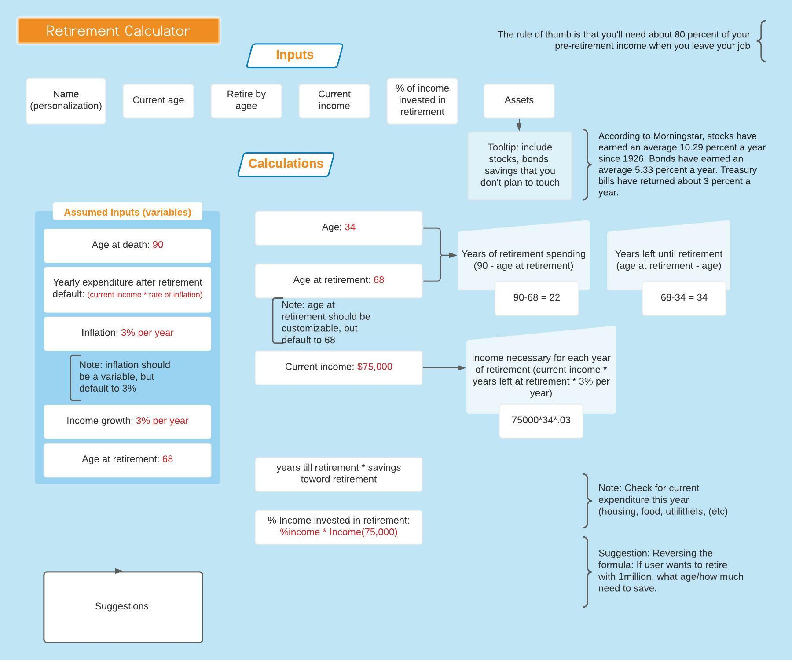

Retirement Calculator
Overview
Project Brief
Working in a team of three developers, we were tasked with working collaboratively to create a retirement calculator which gives the user an estimate of when they can comfortably retire and how much they will have.
About Self Financial
Self Financial is a successful fintech business dedicated to helping thousands of people begin their financial journey with a Credit Builder Account.
Problem Statement
Self, Inc's users are primarily people who do not have a credit history and are looking to take charge of their financial future. The challenge was to create a user friendly and intuitive retirement calculator in which these users can input their income, savings, and other financial data in order to decide if they are saving enough money for their targeted retirement age.
Market Research
The team met weekly to discuss how best to approach the problem. In order to have the most accurate calculations, we consulted with a professional CPA to have them review our calculations. This data was then translated into JavaScript format using functions. The calculator contains the essential factors of age, annual income, income increase, savings, expenditure, assets, desired retirement age.
Competitor Analysis
With a variety of choices for retirement calculators, Self Financial wanted to stand out with ease of use, design, and accurate calculations. Competitive market analysis proved that these retirement calculators were often well developed, but could also be overwhelming with the amount of inputs needed by the user. Since the target audience of Self's calculator included millenials and older Gen Zers, our team opted to keep the inputs at a minimum. It was also important to include tooltips so that the user could hover over the text in order to understand what each input meant. Below are the top financial calculators on the market.
- Fidelity
- Personal Capital
- Van Guard
- Charles Schwab
Prototyping
In order to understand what the users needed to input, we created a LucidChart which helped to understand the customer inputs and how they would work together within the JavaScript calculations.
The LucidChart helped to visually map out how the inputs would coordinate with the calculations, chart, and user suggestions.
